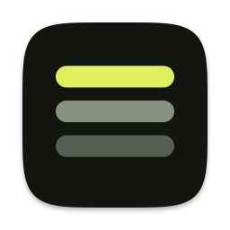

The ＋ button on every YouTube thumbnail adds the video to your stack. Find the stack under the Stopka icon in the Safari toolbar.
Turn on Stopka in Safari Settings, under Extensions.
Stopka is on. Open YouTube — you’ll see ＋ on every thumbnail.
Stopka is off. Turn it on in Safari Settings, under Extensions.